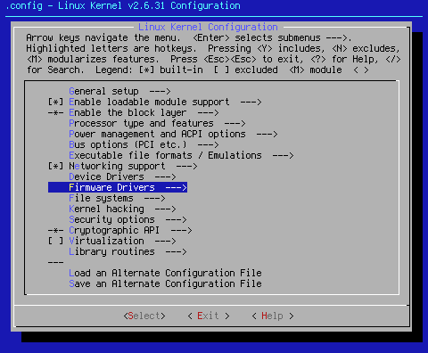
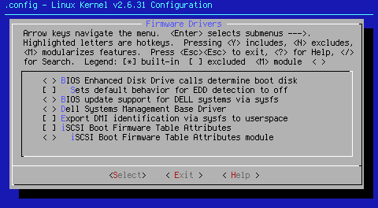
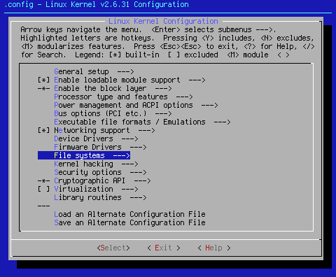
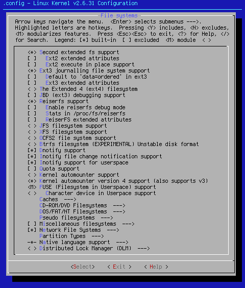

Custom Search
This page covers Firmware Drivers and File systems.

Arrow key down to the area shown. When you hit <Select> at this point, you will bring up the following sub page:

< > BIOS Enhanced Disk Drive calls determine boot disk
< Help > pretty much says it all: "This option is experimental and is known to fail to boot on some obscure configurations. Most disk controller BIOS vendors do not yet implement this feature." Since this setting is experimental, known to fail, and not supported, this setting defaults to off.
[ ] Sets default behavior for EDD detection to off
This is yet another setting that rode in on the kernel defaults. If you read < Help >, you say yes here if you want EDD support disabled, and no if you want it enabled. Having experimented with this setting, I don't see a lot of difference with or without it. For that reason, the default for this setting is off.
< > BIOS update support for DELL systems via sysfs
This driver works with Dell OpenManage or Dell Update Packages for updating the BIOS on Dell servers (starting from servers sold since 1999), desktops and notebooks (starting from those sold in 2005). Since this is a one-shot setting, it defaults to off.
< > Dell Systems Management Base Driver
According to file Documentation/dcdbas.txt, "Dell OpenManage requires this driver on the following Dell PowerEdge systems: 300, 1300, 1400, 400SC, 500SC, 1500SC, 1550, 600SC, 1600SC, 650, 1655MC, 700, and 750. Other Dell software such as the open source libsmbios project is expected to make use of this driver, and it may include the use of this driver on other Dell systems. If you have one of these systems and wish to use this, turn it on here. Since this is another one-shot, it defaults to off.[*] Export DMI identification via sysfs to userspace
According to < Help >,"Say Y here if you want to query SMBIOS/DMI system identification information from userspace through /sys/class/dmi/id/ or if you want DMI-based module auto-loading."
While not fully necessary for proper operation, this setting does allow for a glimpse inside your machine without opening it up. Since that carries a bit of geek coolness in my opinion, this setting defaults to on.
[ ] iSCSI Boot Firmware Table Attributes
The iSCSI Boot Firmware Table is a mechanism for the iSCSI tools to extract from the machine NICs the iSCSI connection information so that they can automagically mount the iSCSI share/target. iSCSI is a method of accessing remote drive resources over either a LAN or WAN. If you desire this operation, turn this setting on. Since I have yet to find a reason to use this, this setting defaults to off.
< > iSCSI Boot Firmware Table Attributes module
This option enables support for detection and exposing of the iSCSI Boot Firmware Table (iBFT) via sysfs to userspace. Once again, if you wish to use this option, turn this setting on. Since I don't use iSCSI, this setting defaults to off.

Arrow key down to the area shown. When you hit <Select> at this point, you will bring up the following sub page:

<*> Second extended fs support
[ ] Ext2 extended attributes
[ ] Ext2 POSIX Access Control Lists (NEW)
[ ] Ext2 Security Labels (NEW)
[ ] Ext2 execute in place support
The ext2 or second extended filesystem is a non-journalling file system. While it is best used on solid state memory devices, as the lack of a journal minimizes read/write cycles, it can also be used for standard hard drives. Since it lacks a journal, it is sensitive to unclean shutdowns. Because of this, it is recommended that if you use this file system, you use it only on the /boot partition, if you set your system up with the same. Note that the two options under Ext2 extended attributes are turned off unless the option itself is checked
<*> Ext3 journalling file system support
[ ] Default to 'data=ordered' in ext3
[ ] Ext3 extended attributes
[ ] Ext3 POSIX Access Control Lists (NEW)
[ ] Ext3 Security Labels (NEW)
The ext3 or third extended filesystem is a journaled file system. Since it shares everything but the journal with ext2, you can change to ext3 by adding the journal. The journal makes ext3 much more reliable. It also eliminates the need to check the file system after an unclean shutdown. As above, the two options under Ext3 extended attributes are turned off unless the option itself is checked.
< > The Extended 4 (ext4) filesystem
[ ] Enable ext4dev compatibility
[ ] Ext4 extended attributes (NEW)
[ ] Ext4 POSIX Access Control Lists
[ ] Ext4 Security Labels
Ext4 is the next generation of extended file system. It was introduced with kernel version 2.6.28. It has many advantages over ext3 in performance and file/file system sizes. Since it is a newer file system, and still has some bugs present, I don't support or recommend it. For this reason, this setting defaults to off.
[ ] JBD (ext3) debugging support
This is a debugging adjunct to ext3 file system. If you have ext3 issues, you can turn this setting on, and troubleshoot your ext3 file system. This setting defaults to off. Turn it on if you are having issues.
<*> Reiserfs support
[ ] Enable reiserfs debug mode
[ ] Stats in /proc/fs/reiserfs
[ ] ReiserFS extended attributes
[ ] ReiserFS POSIX Access Control Lists (NEW)
[ ] ReiserFS Security Labels (NEW)
ReiserFS, now also known as Resiser3, is a general-purpose, journaled computer file system designed and implemented by a team at Namesys led by Hans Reiser. It's biggest claim to fame is its ability to store small files very efficiently. It is also good performance-wise as well. Since it's my preferred file system, this setting defaults to on.
< > JFS filesystem support
[ ] JFS POSIX Access Control Lists
[ ] JFS Security Labels
[ ] JFS debugging
[ ] JFS statistics
The Journaled File System (JFS) provides a log-based, byte-level file system that was developed for transaction-oriented, high performance systems. Scalable and robust, its advantage over non-journaled file systems is its quick restart capability: JFS can restore a file system to a consistent state in a matter of seconds or minutes. If you want to use JFS, turn the settings on here. This setting defaults to off.
< > XFS filesystem support
[ ] XFS Quota support
[ ] XFS POSIX ACL support
[ ] XFS Realtime subvolume support
[ ] XFS Debugging support (EXPERIMENTAL)
XFS is a high-performance journaling file system created by Silicon Graphics, originally for their IRIX operating system and later ported to Linux kernel. XFS is particularly proficient at handling large files and at offering smooth data transfers. This setting defaults to off.
< > OCFS2 file system support
< > O2CB Kernelspace Clustering (NEW)
[ ] OCFS2 statistics (NEW)
[ ] OCFS2 logging support (NEW)
[ ] OCFS2 expensive checks
[ ] OCFS2 POSIX Access Control Lists
OCFS2 is a POSIX-compliant shared-disk cluster file system for Linux capable of providing both high performance and high availability. To find more information on OCFS2, click here.
< > Btrfs filesystem (EXPERIMENTAL) Unstable disk format
[ ] Btrfs POSIX Access Control Lists
Btrfs is under heavy development, but every effort is being made to keep the filesystem stable and fast. Be that as it may, I don't recommend Btrfs for important data, as it is ostensibly unstable at the time of this writing. This setting defaults to off.
[*] Dnotify support
[*] Inotify file change notification support
[*] Inotify support for userspace
These three settings are related in function as they allow file change notification information into userspace. This is used by numerous packages. Some packages support only one of the options. For that reason, all these settings are turned on.
[ ] Quota support
Turning this setting on allows you to set per user upper limits for disk usage. This setting currently supports ext2, ext3, and reiserfs. If you have these file systems set up and need to set quotas, this is the setting to use. Since disk quotas have nothing to do with making a computer operate properly under Linux, this setting defaults to off.
< > Kernel automounter support
<*> Kernel automounter version 4 support (also supports v3)
The automounter is a tool to automatically mount remote file systems (read NFS) on demand. This is a desired state of operation. Since version 4 supports version 3, version 3 defaults to off and version 4 defaults to on. I haven't seen any problems running with both compiled in, so this one is left up to you. I set it up this way for brevity.
<M> FUSE (Filesystem in Userspace) support
FUSE allows you to create and use a fully functional file system in userspace. This can be anything from complete read and write support for the NTFS file system via ntfs-3g to file systems created via ssh sessions, and lots of other things in between. Since FUSE is incredibly useful, and since I dual boot, this setting defaults to on.
Notes on FUSE: If you're going to use it, set it as a module. When FUSE is compiled into the kernel, it cannot have arguments passed to it properly. This will cause failure of your FUSE dependent packages. For most applications, you will also need to install libfuse.
< > Character device in Userpace support
This FUSE extension allows character devices to be implemented in userspace. This is relatively new code, and as of yet, I have not found a need for it. For that reason, it defaults to off.
Caches --->
The Caches settings tree is as follows:
< > General filesystem local caching manager
[ ] Gather statistical information on local caching
[ ] Gather latency information on local caching
[ ] Debug FS-Cache
< > Filesystem caching on files
[ ] Debug CacheFiles
[ ] Gather latency information on CacheFiles
According to < Help >,"This option enables a generic filesystem caching manager that can be used by various network and other filesystems to cache data locally. Different sorts of caches can be plugged in, depending on the resources available."
At this time, I have not tested this code. This setting will be undergoing testing soon.
CD-ROM/DVD Filesystems --->
The CD-ROM/DVD Filesystems settings tree is as follows:
<*> ISO 9660 CDROM file system support
[*] Microsoft Joliet CDROM extensions
[*] Transparent decompression extension
<*> UDF file system support
The kernel seed defaults are as follows:
<*> ISO 9660 CDROM file system support
ISO9660 is THE standard CD file system. Without this, your CDROM drive becomes a cup holder, or perhaps you'll get lucky and find a Linux package that takes the audio out from the CDROM drive. Because this is another essential setting, it defaults to on.
[*] Microsoft Joliet CDROM extensions
If you wish to be able to read Microsoft Joliet CDROM's, turn this setting on. Since most CD ROM disks out there are made with Joliet, this is another essential setting. This setting defaults to on.
[*] Transparent decompression extension
Of all the settings here, this is the least needed. This is a Linux-specific extension to RockRidge which lets you store data in compressed form on a CD-ROM and have it transparently decompressed when the CD-ROM is accessed. This setting is a "just in case," setting. While it's not likely you'll find a lot of these roaming around, this setting defaults to on in case it is needed.
<*> UDF file system support
This is another essential setting if you wish to read or write a DVD over 2 Gigabytes in size. Since most DVD's clock in over two gigs, this setting defaults to on.
DOS/FAT/NT Filesystems --->
The DOS/FAT/NT Filesystems settings tree is as follows:
<*> MSDOS fs support
<*> VFAT (Windows-95) fs support
(437) Default codepage for FAT
(iso8859-1) Default iocharset for FAT
< > NTFS file system support
[ ] NTFS debugging support
[ ] NTFS write support
The kernel seed defaults are as follows:
<*> MSDOS fs support
<*> VFAT (Windows-95) fs support
(437) Default codepage for FAT
These settings are turned on as a service to those who might have a DOS FAT partition. They can be turned off without issue if you have no FAT partitions.
Pseudo filesystems --->
The Pseudo filesystems settings tree is as follows:
-*- /proc file system support
[*] /proc/kcore support
[*] Virtual memory file system support (former shm fs)
[*] Tmpfs POSIX Access Control Lists
[*] HugeTLB file system support
< > Userspace-driven configuration filesystem
The kernel seed defaults are as follows:
-*- /proc file system support
This setting is so important it's hard wired into the kernel. A Linux install without the /proc directory is a Linux install that doesn't work.
[*] /proc/kcore support
/proc/kcore is like an "alias" for the memory in your computer. I'd say that makes it pretty important, and forces this setting to default to on.
[*] Virtual memory file system support (former shm fs)
Once again, we have an essential setting. Tmpfs is a file system which keeps all files in virtual memory. Using tmpfs file systems can radically increase speed for disk intensive operations. For Gentoo users, one of those disk intensive operations is compilation of software. Because this setting is important, it defaults to on.
[*] Tmpfs POSIX Access Control Lists
This setting is definitely going to change in the next iteration. For now, it defaults to on.
[*] HugeTLB file system support
This setting is going to be turned off in the next iteration. Research has shown it to be unneeded for basic operation.
< > Userspace-driven configuration filesystem
According to < Help >,"Both sysfs and configfs can and should exist together on the same system. One is not a replacement for the other."
While this is true, I haven't seen any issues as a result of this setting's condition. While this setting will most likely be tested in the near future, it is not currently slated for doing so at this time.
[ ] Miscellaneous filesystems--->
The Miscellaneous filesystems settings tree is as follows:
--- Miscellaneous filesystems
< > ADFS file system support (EXPERIMENTAL)
[ ] ADFS write support (DANGEROUS)
< > Amiga FFS file system support (EXPERIMENTAL)
< > Apple Macintosh file system support (EXPERIMENTAL)
< > Apple Extended HFS file system support
< > BeOS file system (BeFS) support (read only) (EXPERIMENTAL)
[ ] Debug BeFS
< > BFS file system support (EXPERIMENTAL)
< > EFS file system support (read only) (EXPERIMENTAL)
< > Compressed ROM file system support (cramfs)
< > SquashFS 4.0 - Squashed file system support (NEW)
< > FreeVxFS file system support (VERITAS VxFS(TM) compatible)
< > Minix file system support
< > SonicBlue Optimized MPEG File System support
< > OS/2 HPFS file system support
< > QNX4 file system support (read only)
< > ROM file system support
RomFS backing stores (Block device-backed ROM file system support)
< > System V/Xenix/V7/Coherent file system support
< > UFS file system support (read only)
[ ] UFS file system write support (DANGEROUS)
[ ] UFS debugging
< > NILFS2 file system support (EXPERIMENTAL)
Since none of the above file systems are required for proper operation, these settings default to off. If you need support for any of the listed file systems, turn on support.
[*] Network File Systems--->
The Network File Systems settings tree is as follows:
--- Network File Systems
<*> NFS client support
[*] NFS client support for NFS version 3
[ ] NFS client support for the NFSv3 ACL protocol extension
[ ] NFS client support for NFS version 4 (EXPERIMENTAL)
[ ] NFS client support for NFSv4.1 (DEVELOPER ONLY)
[*] Root file system on NFS
<*> NFS server support
[*] NFS server support for NFS version 3
[ ] NFS server support for the NFSv3 ACL protocol extension
[ ] NFS server support for NFS version 4 (EXPERIMENTAL)
--- Secure RPC: Kerberos V mechanism (EXPERIMENTAL)
< > Secure RPC: SPKM3 mechanism (EXPERIMENTAL)
< > SMB file system support (OBSOLETE, please use CIFS)
[ ] Use a default NLS
(cp437) Default Remote NLS Option (NEW)
<*> CIFS support (advanced network filesystem, SMBFS successor)
[ ] CIFS statistics
[ ] Extended statistics
[ ] Support legacy servers which use weaker LANMAN security
[ ] Kerberos/SPNEGO advanced session setup (NEW)
[ ] CIFS extended attributes
[ ] CIFS POSIX Extensions
[ ] Enable additional CIFS debugging routines
[ ] DFS feature support
[ ] CIFS Experimental Features (EXPERIMENTAL)
< > NCP file system support (to mount NetWare volumes)
[ ] Packet signatures
[ ] Proprietary file locking
[ ] Clear remove/delete inhibit when needed
[ ] Use NFS namespace if available
[ ] Use LONG (OS/2) namespace if available
[ ] Lowercase DOS filenames
[ ] Use Native Language Support
[ ] Enable symbolic links and execute flags
< > Coda file system support (advanced network fs)
< > Andrew File System support (AFS) (EXPERIMENTAL)
[ ] AFS dynamic debugging
The kernel seed defaults are as follows:
<*> NFS client support
[*] NFS client support for NFS version 3
These settings set your machine up as an NFS-3 client, ie. it receives files via the NFS-3 protocol from other machines in your network. This is an essential setting if you wish to receive files from other machines on your network that are configured as servers. For obvious reasons, this setting defaults to on.
<*> NFS server support
[*] NFS server support for NFS version 3
These settings set your machine up as an NFS-3 server, ie. it sends files via the NFS-3 protocol to other NFS machines in your network. This is an essential setting if you wish to send files to other machines on your network that are configured as clients. For obvious reasons, this setting also defaults to on. Note you will also need nfs-utils, and depending on your setup, autofs as well.
<*> CIFS support (advanced network filesystem, SMBFS successor)
This setting allows you to share files and printers with Windows based machines. This setting is a must if you wish to be able to access Windows shares, or share files and printers on your Linux machine. The samba program suite is also required, as is CUPS for printer sharing. Since I have Windows machines on my network, this setting defaults to on.
Partition Types--->
The Partition Types settings tree is as follows:
[ ] Advanced partition selection
[ ] Acorn partition support
[ ] Cumana partition support
[ ] EESOX partition support
[ ] ICS partition support
[ ] Native filecore partition support
[ ] PowerTec partition support
[ ] RISCiX partition support
[ ] Alpha OSF partition support
[ ] Amiga partition table support
[ ] Atari partition table support
[ ] Macintosh partition map support
[ ] PC BIOS (MSDOS partition tables) support (NEW)
[ ] BSD disklabel (FreeBSD partition tables) support
[ ] Minix subpartition support
[ ] Solaris (x86) partition table support
[ ] Unixware slices support
[ ] Windows Logical Disk Manager (Dynamic Disk) support
[ ] Windows LDM extra logging
[ ] SGI partition support
[ ] Ultrix partition table support
[ ] Sun partition tables support
[ ] Karma Partition support
[ ] EFI GUID Partition support
[ ] SYSV68 partition table support
Turn these on if and only if you have the described partitions, and wish to access them. Note, you do not have to turn the [*] PC BIOS (MSDOS partition tables) support (NEW) setting on in order to access MSDOS paritions on your drive(s) as long as you have MSDOS fs support turned on under DOS/FAT/NT Filesystems. This is a common mistake. While it's not a serious error, it shows the amount of confusion that exists over certain kernel settings. Since none of the above are required for the standard PC to work with Linux, these settings default to off.
Native language support --->
The settings tree is as follows:
--- Native language support
(utf8) Default NLS Option
<*> Codepage 437 (United States, Canada)
< > Codepage 737 (Greek)
< > Codepage 775 (Baltic Rim)
< > Codepage 850 (Europe)
< > Codepage 852 (Central/Eastern Europe)
< > Codepage 855 (Cyrillic)
< > Codepage 857 (Turkish)
< > Codepage 860 (Portuguese)
< > Codepage 861 (Icelandic)
< > Codepage 862 (Hebrew)
< > Codepage 863 (Canadian French)
< > Codepage 864 (Arabic)
< > Codepage 865 (Norwegian, Danish)
< > Codepage 866 (Cyrillic/Russian)
< > Codepage 869 (Greek)
< > Simplified Chinese charset (CP936, GB2312)
< > Traditional Chinese charset (Big5)
< > Japanese charsets (Shift-JIS, EUC-JP)
< > Korean charset (CP949, EUC-KR)
< > Thai charset (CP874, TIS-620)
< > Hebrew charsets (ISO-8859-8, CP1255)
< > Windows CP1250 (Slavic/Central European Languages)
< > Windows CP1251 (Bulgarian, Belarusian)
<*> ASCII (United States)
<*> NLS ISO 8859-1(Latin 1; Western European Languages)
< > NLS ISO 8859-2(Latin 2; Slavic/Central European Languages)
< > NLS ISO 8859-3(Latin 3; Esperanto, Galician, Maltese, Turkish)
< > NLS ISO 8859-4(Latin 4; old Baltic charset)
< > NLS ISO 8859-5(Cyrillic)
< > NLS ISO 8859-6(Arabic)
< > NLS ISO 8859-7(Modern Greek)
< > NLS ISO 8859-9(Latin 5; Turkish)
< > NLS ISO 8859-13 (Latin 7; Baltic)
< > NLS ISO 8859-14 (Latin 8; Celtic)
< > NLS ISO 8859-15 (Latin 9; Western European Languages with Euro)
< > NLS KOI8-R (Russian)
< > NLS KOI8-U/RU (Ukrainian, Belarusian)
<*> NLS UTF-8
The default for this is UTF-8. Other settings are as listed. If you need to add support for your native language, select the option desired.
<*> Distributed Lock Manager (DLM) --->
The Distributed Lock Manager settings tree is as follows:
--- Distributed Lock Manager (DLM)
[*] DLM debugging
A distributed lock manager (DLM) provides distributed applications with a means to synchronize their access to shared resources. While there are situations where this is a good thing, it is not necessary in order to get the computer to operate under Linux. For that reason, this setting defaults to off.
This is the end of page 9.
Cheers,
Pappy